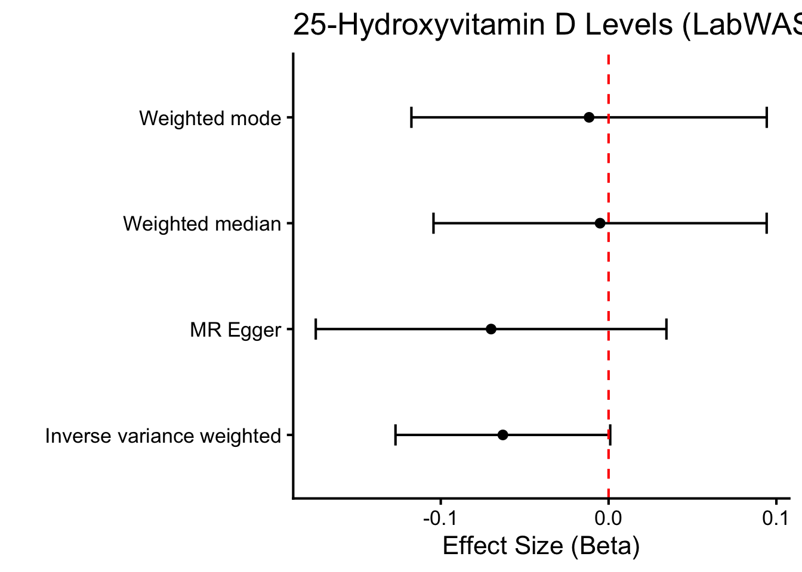
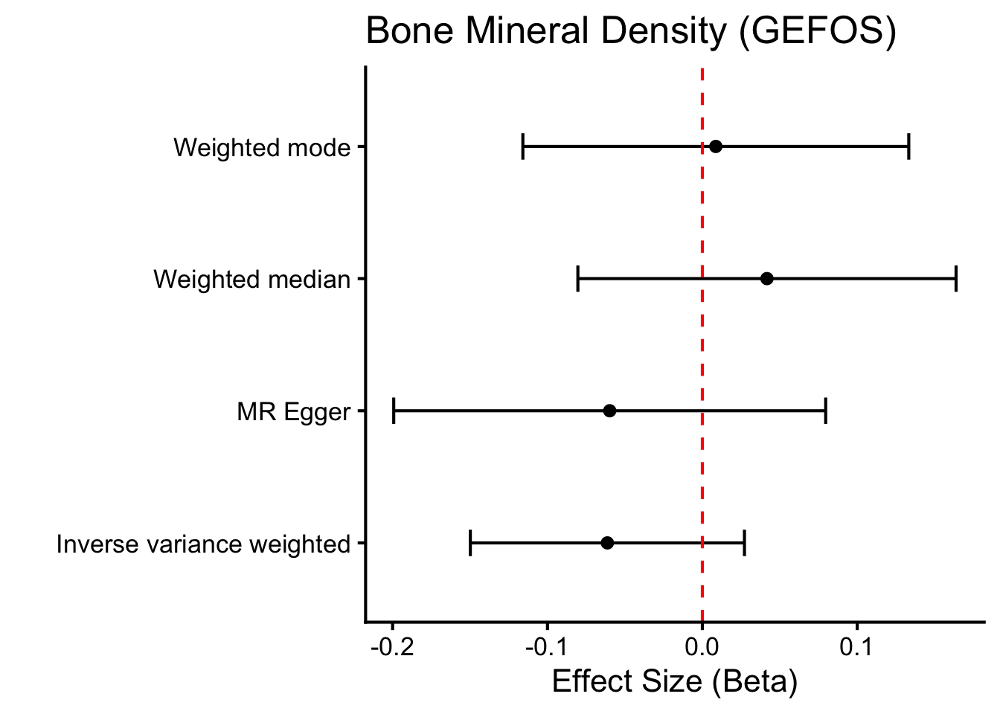

MR Analyses of Secondary Outcomes for Total Cholesterol on Calcium Homeostasis
Author
Dave Bridges
Published
October 16, 2025
Show the code
# hide this code chunk#| echo: false#| message: false# defines the se functionse <-function(x) {sd(x, na.rm =TRUE) /sqrt(length(x))}#load these packages, nearly always neededlibrary(tidyverse)library(knitr)# sets maize and blue color schemecolor_scheme <-c("#00274c", "#ffcb05")
Purpose
To test if SNPs for total cholesterol GWAS identified using UK Biobank relate to other mechanistic or pathological outcomes related to calcium homeostasis and bone health. This script can be found in /Users/davebrid/Documents/GitHub/PrecisionNutrition/Human Genetics and was most recently run on Sun Oct 19 18:04:15 2025
We used 370 SNPs as instruments for total cholesterol from UK Biobank. These are found in the Total Cholesterol Instruments from UKBB.csv datafile.
Mechanistic Outcomes
Vitamin D Levels
This analysis is to test the hypothesis that total cholesterol impacts 25-hydroxyvitamin D levels, as cholesterol is a precursor for vitamin D synthesis in the skin. This could positively impact calcium levels indirectly via increased vitamin D. This was from MGI-BioVU LabWAS data (Goldstein et al. 2020).
Show the code
gwas.vitd.file <-'PheWeb Summary Statistics/phenocode-Vit-D.tsv.gz'samplesize.outcome.vitd <-12250# sample size for MGI/BioVU for calcium from gwas.vitd <-read_tsv(gwas.vitd.file) |>mutate(ID=paste(chrom, pos, ref,alt, sep=":")) |>rename(SNP = ID, # or ID if that’s the matching IDbeta.outcome = beta,se.outcome = sebeta,effect_allele.outcome = alt, # whichever is effect alleleother_allele.outcome = ref, # whichever is other allelepval.outcome = pval,eaf.outcome = maf, ) |>mutate(id.outcome ="Vitamin D (MGI-BioVU LabWAS)",outcome ="Vitamin D (MGI-BioVU LabWAS)",samplesize.outcome = samplesize.outcome.vitd) # sample size for MGI/BioVU for vitamin D)library(TwoSampleMR)vitd.data <-harmonise_data(instruments.tc, gwas.vitd, action =2)vitd.data_steiger <-steiger_filtering(vitd.data)vitd.mr <-mr(vitd.data_steiger,method_list =c("mr_ivw", "mr_egger_regression","mr_weighted_median", "mr_weighted_mode"))vitd.mr |>select(-starts_with('id')) |>kable(caption="MR Results for Total Cholesterol - Vitamin D Analysis",digits=c(0,0,0,0,3,3,99))
MR Results for Total Cholesterol - Vitamin D Analysis
outcome
exposure
method
nsnp
b
se
pval
Vitamin D (MGI-BioVU LabWAS)
Total Cholesterol (UK Biobank)
Inverse variance weighted
280
-0.063
0.033
0.05362791
Vitamin D (MGI-BioVU LabWAS)
Total Cholesterol (UK Biobank)
MR Egger
280
-0.070
0.053
0.19017784
Vitamin D (MGI-BioVU LabWAS)
Total Cholesterol (UK Biobank)
Weighted median
280
-0.005
0.051
0.92034889
Vitamin D (MGI-BioVU LabWAS)
Total Cholesterol (UK Biobank)
Weighted mode
280
-0.012
0.054
0.82989834
Show the code
ggplot(vitd.mr, aes(y=method,x=b)) +geom_point() +geom_errorbar(aes(xmin=b-1.96*se, xmax=b+1.96*se), width=0.2) +theme_classic(base_size=16) +labs(title="25-Hydroxyvitamin D Levels (LabWAS)",y="",x="Effect Size (Beta)") +geom_vline(xintercept=0, linetype="dashed", color ="red")

Pathological Outcomes
Bone Mineral Density
GEFOS Consortium Lumbar Spine BMD
Lumbar spine tends to reflect trabecular bone, which is metabolically active, hormonally responsive, and more sensitive to lipid and endocrine perturbations. Multiple epidemiologic studies report inverse associations between total cholesterol and LS-BMD, particularly among older adults and postmenopausal women (Hu et al. 2023; Fang et al. 2022). We used the pooled (not sex-specific) estimates from the GEFOS consortium’s pooled meta-analysis (Estrada et al. 2012).
Show the code
gwas.bmd.file <-'PheWeb Summary Statistics/GEFOS2_LSBMD_POOLED_GC.txt.gz'samplesize.outcome.bmd <-32961# sample size from estradaGenomewideMetaanalysisIdentifies2012gwas.bmd <-read_tsv(gwas.bmd.file) |>rename(beta.outcome = Effect,se.outcome = StdErr,pval.outcome =`P-value`,eaf.outcome = Freq1, ) |>mutate(id.outcome ="bmd",outcome ="LS-BMD (GEFOS)",effect_allele.outcome =toupper(Allele1), # whichever is effect alleleother_allele.outcome =toupper(Allele2), # whichever is other allelesamplesize.outcome = samplesize.outcome.bmd) # sample size for MGI/BioVU for vitamin D)#runs very slow so commented out after saving the SNP file library(biomaRt)#snp.mart <- useEnsembl(biomart="snp", dataset="hsapiens_snp")#snp.data <- getBM(attributes=c("refsnp_id", "chr_name", "chrom_start", "allele"),# filters="snp_filter",# values=gwas.bmd$MarkerName,# mart=snp.mart)gefos.snp.datafile <-"GEFOS-2012 SNP ID File.csv"#write_csv(snp.data, gefos.snp.datafile)bmd.snp.data <-read_csv(gefos.snp.datafile) |>mutate(SNP=paste(chr_name, chrom_start,substr(allele, 1, 1), sep=":")) #just picked hte first alt allelegwas.bmd.combined <-left_join(gwas.bmd,bmd.snp.data, by=c("MarkerName"="refsnp_id")) #no harmonised SNPsbmd.data <-harmonise_data(instruments.tc, gwas.bmd.combined, action =2)bmd.data_steiger <-steiger_filtering(bmd.data)bmd.mr <-mr(bmd.data_steiger,method_list =c("mr_ivw", "mr_egger_regression","mr_weighted_median", "mr_weighted_mode"))bmd.mr |> dplyr::select(-starts_with('id')) |>kable(caption="MR Results for Total Cholesterol - Lumbar Spine BMD (GEFOS - 2012)",digits=c(0,0,0,0,3,3,99))
MR Results for Total Cholesterol - Lumbar Spine BMD (GEFOS - 2012)
This second analysis is from lumbar spine data from the GEFOS 2015 release ((Zheng et al. 2015))
Show the code
gwas.bmd.file.2015<-'PheWeb Summary Statistics/ls2stu.MAF0_.005.pos_.out_.gz'samplesize.outcome.bmd.2015<-53236# sample size from zhengWholegenomeSequencingIdentifies2015gwas.bmd.2015<-read_tsv(gwas.bmd.file.2015) |>rename(beta.outcome = beta,se.outcome = se,effect_allele.outcome = reference_allele, # whichever is effect alleleother_allele.outcome = other_allele, # whichever is other allelepval.outcome =`p-value`,eaf.outcome = eaf, ) |>mutate(SNP=paste(chromosome,position,effect_allele.outcome,other_allele.outcome,sep=":"),id.outcome ="bmd",outcome ="LS-BMD (GEFOS)",samplesize.outcome = samplesize.outcome.bmd.2015) # sample size for MGI/BioVU for vitamin D)bmd.data.2015<-harmonise_data(instruments.tc, gwas.bmd.2015, action =2)bmd.data_steiger.2015<-steiger_filtering(bmd.data.2015)bmd.mr.2015<-mr(bmd.data_steiger.2015,method_list =c("mr_ivw", "mr_egger_regression","mr_weighted_median", "mr_weighted_mode"))bmd.mr.2015|> dplyr::select(-starts_with('id')) |>kable(caption="MR Results for Total Cholesterol - Lumbar Spine BMD (GEFOS - 2015)",digits=c(0,0,0,0,3,3,99))
MR Results for Total Cholesterol - Lumbar Spine BMD (GEFOS - 2015)
outcome
exposure
method
nsnp
b
se
pval
LS-BMD (GEFOS)
Total Cholesterol (UK Biobank)
Inverse variance weighted
84
-0.061
0.045
0.1744722
LS-BMD (GEFOS)
Total Cholesterol (UK Biobank)
MR Egger
84
-0.060
0.071
0.4029161
LS-BMD (GEFOS)
Total Cholesterol (UK Biobank)
Weighted median
84
0.042
0.062
0.5030125
LS-BMD (GEFOS)
Total Cholesterol (UK Biobank)
Weighted mode
84
0.009
0.064
0.8915693
Show the code
ggplot(bmd.mr.2015, aes(y=method,x=b)) +geom_point() +geom_errorbar(aes(xmin=b-1.96*se, xmax=b+1.96*se), width=0.2) +theme_classic(base_size=16) +labs(title="Bone Mineral Density (GEFOS)",y="",x="Effect Size (Beta)") +geom_vline(xintercept=0, linetype="dashed", color ="red")

Hypothesis Testing
Given that we have two hypotheses:
Cholesterol increases calcium by increasing vitamin D
Cholesterol increases calcium by decreasing bone mineral density
We performed a Bayesian analysis to determine the posterior probabilities of four possible outcomes:
Show the code
# Function to compute posterior probability for a directional hypothesis# - beta_hat: point estimate# - se: standard error# - direction: "less" for P(beta < 0), "greater" for P(beta > 0)posterior_prob_direction <-function(beta_hat, se, direction =c("less", "greater")) { direction <-match.arg(direction) z <- (0- beta_hat) / se # z-score for the boundary at 0if (direction =="less") {return(pnorm(z)) # P(beta < 0) = CDF(z) } else {return(1-pnorm(z)) # P(beta > 0) = 1 - CDF(z) }}# Input MR point estimates and standard errorsbeta_bmd <-filter(bmd.mr.2015,method=="Inverse variance weighted") %>%pull(b) # Point estimate for BMD effect on calciumse_bmd <-filter(bmd.mr.2015,method=="Inverse variance weighted") %>%pull(se) # Standard error for BMDbeta_vitd <-filter(vitd.mr,method=="Inverse variance weighted") %>%pull(b) # Point estimate for Vitamin D effect on calciumse_vitd <-filter(vitd.mr,method=="Inverse variance weighted") %>%pull(se) # Standard error for Vitamin D# Compute individual posterior probabilitiesp_h1_true <-posterior_prob_direction(beta_bmd, se_bmd, "less") # P(β_BMD < 0) ~ supports H1 (lower BMD)p_h1_false <-1- p_h1_true # P(β_BMD >= 0) ~ opposes H1p_h2_true <-posterior_prob_direction(beta_vitd, se_vitd, "greater") # P(β_VitD > 0) ~ supports H2 (higher Vit D)p_h2_false <-1- p_h2_true # P(β_VitD <= 0) ~ opposes H2# Compute joint probabilities (assuming independence)p_both_true <- p_h1_true * p_h2_truep_only_h1_true <- p_h1_true * p_h2_falsep_only_h2_true <- p_h1_false * p_h2_truep_neither_true <- p_h1_false * p_h2_false# Create a data frame for the tableoutcomes_df <-data.frame(Outcome =c("Both True", "Only H1 True", "Only H2 True", "Neither True"),Description =c("H1 true (β_BMD < 0) and H2 true (β_VitD > 0)","H1 true (β_BMD < 0) and H2 false (β_VitD <= 0)","H1 false (β_BMD >= 0) and H2 true (β_VitD > 0)","H1 false (β_BMD >= 0) and H2 false (β_VitD <= 0)" ),Posterior_Probability =c(p_both_true, p_only_h1_true, p_only_h2_true, p_neither_true),Percentage =sprintf("%.2f%%", c(p_both_true, p_only_h1_true, p_only_h2_true, p_neither_true) *100))# Output the table using kablekable(outcomes_df, format ="simple", digits =4, caption ="Joint Posterior Probabilities for the Four Outcomes")
Joint Posterior Probabilities for the Four Outcomes
Outcome
Description
Posterior_Probability
Percentage
Both True
H1 true (β_BMD < 0) and H2 true (β_VitD > 0)
0.0245
2.45%
Only H1 True
H1 true (β_BMD < 0) and H2 false (β_VitD <= 0)
0.8883
88.83%
Only H2 True
H1 false (β_BMD >= 0) and H2 true (β_VitD > 0)
0.0023
0.23%
Neither True
H1 false (β_BMD >= 0) and H2 false (β_VitD <= 0)
0.0849
8.49%
To evaluate the two hypotheses regarding elevated calcium levels:
H1: lower bone mineral density (BMD, supported by \(\beta_{BMD} < 0\))
H2: higher vitamin D levels (supported by \(\beta_{VitD} > 0\))
We applied Bayesian inference using Mendelian randomization (MR) point estimates and standard errors. The analysis assumed flat (non-informative) priors on the effect sizes and independence between the effects of BMD and vitamin D on calcium levels. Below, we summarize the mathematical approach.
Individual Posterior Probabilities
For each hypothesis, we modeled the effect size \(\beta\) (representing the causal effect on calcium levels) with a flat prior, \((p(\beta) \propto 1\). Given the MR point estimate (\(\hat{\beta}\)) and standard error \(SE\)), and assuming that the posterior distribution for \(\beta\) is Normal:
H1 (Lower BMD explains high cholesterol): The MR estimate is \(\hat{\beta}_{\text{BMD}}\) = -0.0613143, \(SE_{BMD}\) = 0.0451513. The posterior probability that \(\beta_{BMD} < 0\) (supporting H1) is 0.9127639 as calculated by the following equation where \(\Phi\) is the cumulative distribution function of the standard normal distribution:
H2 (Higher Vitamin D): The MR estimate is \(\hat{\beta}_{VitD}\) = -0.062997, \(SE_{VitD}\) = 0.0326438 ). The posterior probability that \(\beta_{\text{VitD}} > 0\) (supporting H2) is therefore 0.026814 calculated as:
These probabilities sum to 1, confirming the calculations. The results strongly support H1 (lower BMD) as the most likely explanation for elevated calcium levels (88.8289093% for Only H1 True), with minimal support for the alternate hypotheses.
References
Estrada, Karol, Unnur Styrkarsdottir, Evangelos Evangelou, Yi-Hsiang Hsu, Emma L. Duncan, Evangelia E. Ntzani, Ling Oei, et al. 2012. “Genome-Wide Meta-Analysis Identifies 56 Bone Mineral Density Loci and Reveals 14 Loci Associated with Risk of Fracture.”Nature Genetics 44 (5): 491–501. https://doi.org/10.1038/ng.2249.
Fang, Weihua, Peng Peng, Fangjun Xiao, Wei He, Qiushi Wei, and Mincong He. 2022. “A Negative Association Between Total Cholesterol and Bone Mineral Density in US Adult Women.”Frontiers in Nutrition 9 (September). https://doi.org/10.3389/fnut.2022.937352.
Goldstein, Jeffery A., Joshua S. Weinstock, Lisa A. Bastarache, Daniel B. Larach, Lars G. Fritsche, Ellen M. Schmidt, Chad M. Brummett, et al. 2020. “LabWAS: Novel Findings and Study Design Recommendations from a Meta-Analysis of Clinical Labs in Two Independent Biobanks.”PLoS Genetics 16 (11): e1009077. https://doi.org/10.1371/journal.pgen.1009077.
Hu, Sheng, Silin Wang, Wenxiong Zhang, Lang Su, Jiayue Ye, Deyuan Zhang, Yang Zhang, et al. 2023. “Associations Between Serum Total Cholesterol Level and Bone Mineral Density in Older Adults.”Aging (Albany NY) 15 (5): 1330–42. https://doi.org/10.18632/aging.204514.
Zheng, Hou-Feng, Vincenzo Forgetta, Yi-Hsiang Hsu, Karol Estrada, Alberto Rosello-Diez, Paul J. Leo, Chitra L. Dahia, et al. 2015. “Whole-Genome Sequencing Identifies EN1 as a Determinant of Bone Density and Fracture.”Nature 526 (7571): 112–17. https://doi.org/10.1038/nature14878.